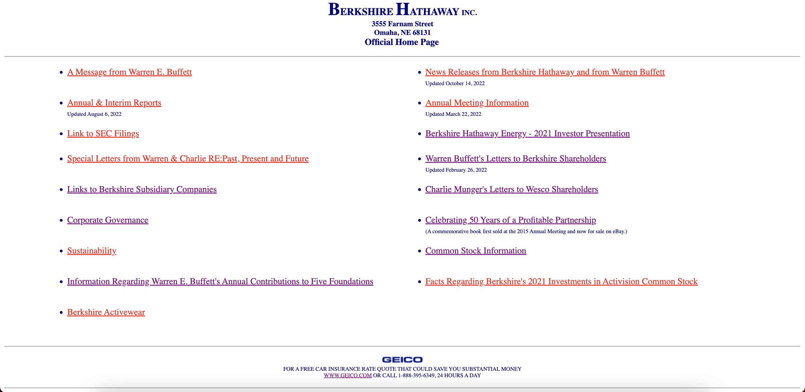
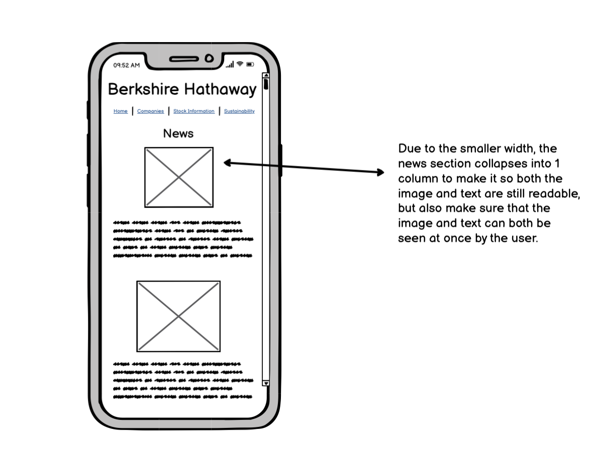
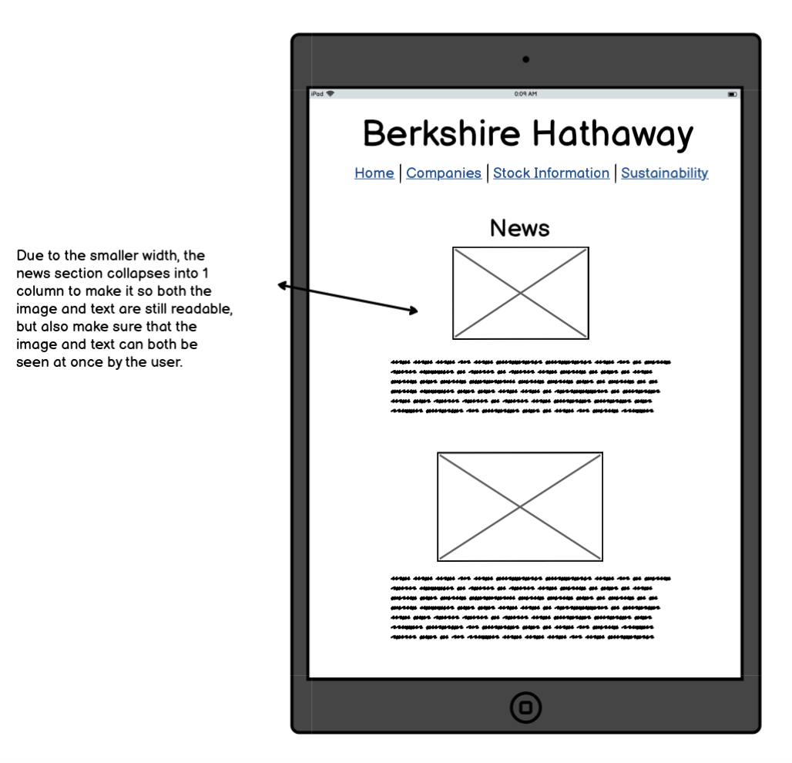
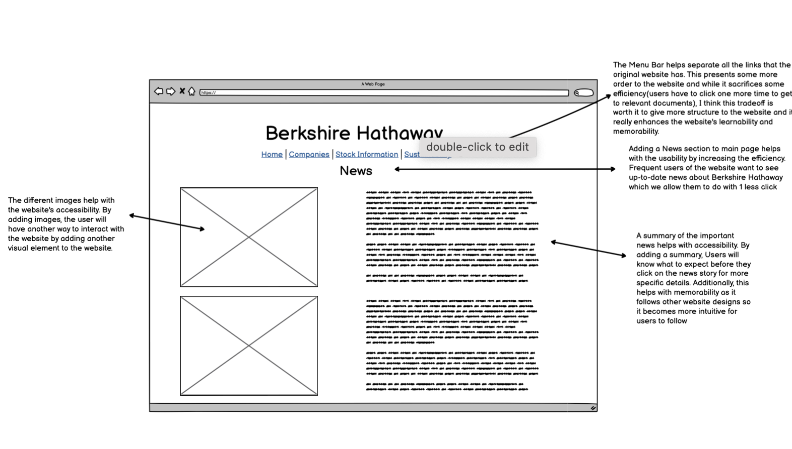
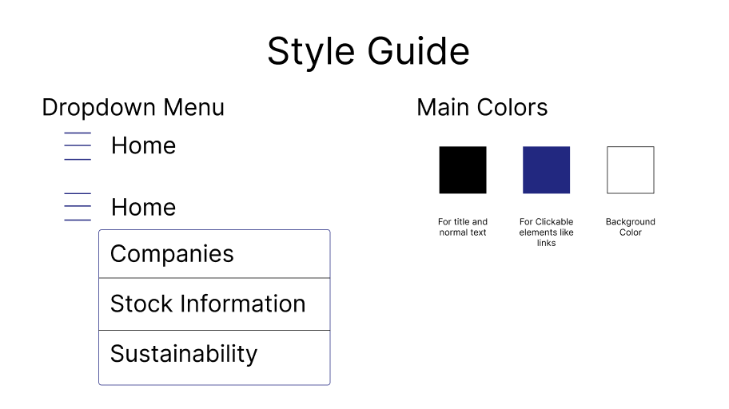
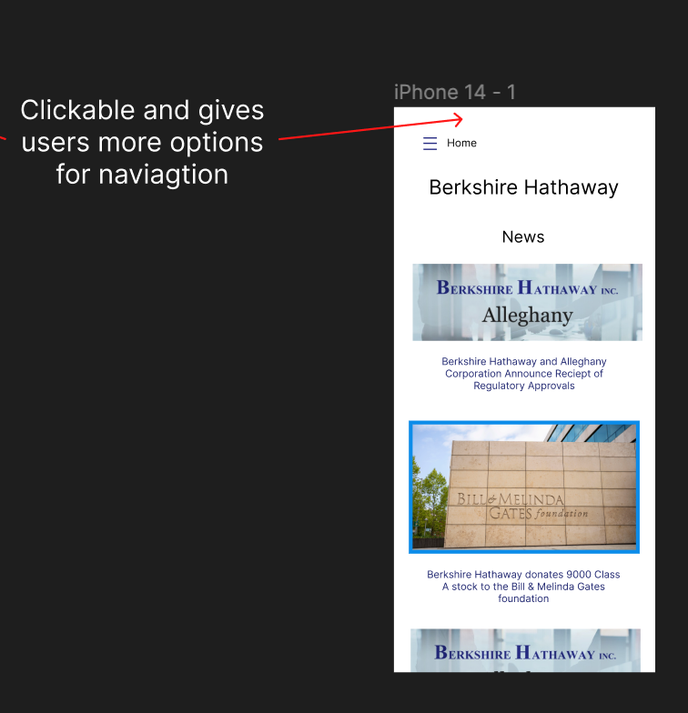
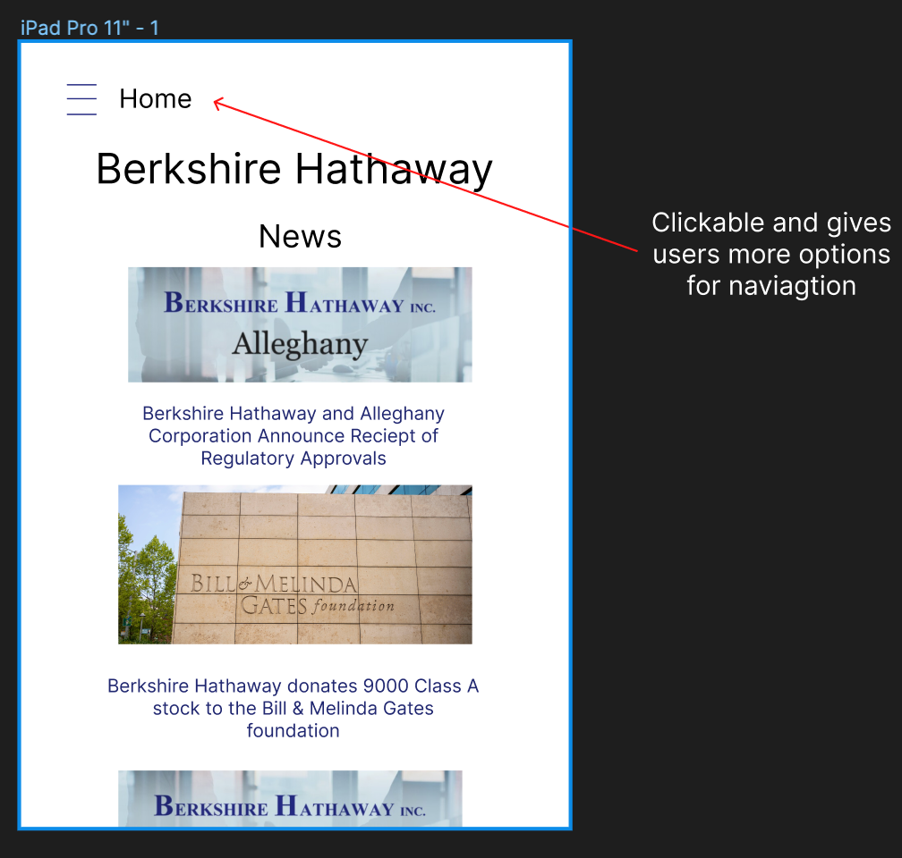
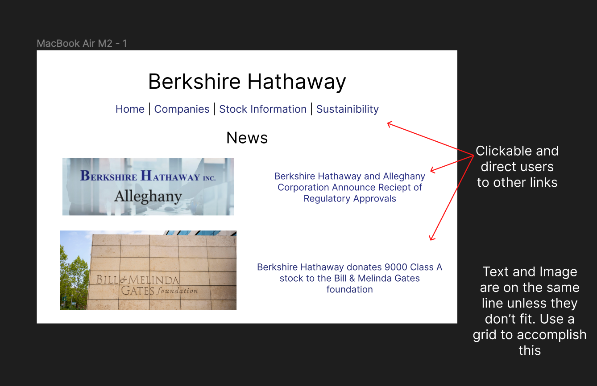
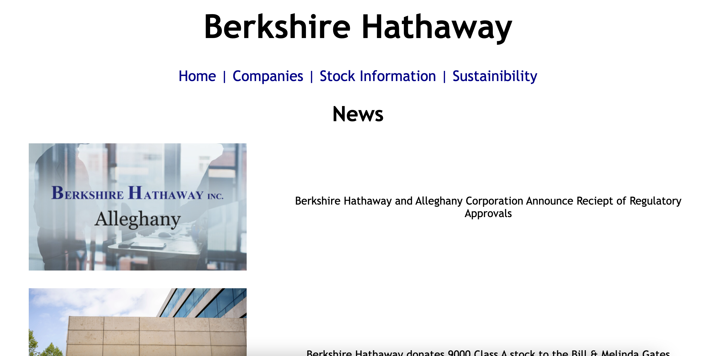

A redesign of the Berkshire Hathaway Website
Websites
Original website
Redesigned website
Why I chose this website

I chose this website because while it has a sizable amount of traffic(Berkshire Hathaway is huge),
it's user interface is very antiquated and not the most intuitive.
Problems and Accessibility issues with the Berkshire Hathaway Website
General Problems
No context on where links go - Users have to click on them to find out where they lead
No images or anything else besides links which makes the website harder to navigate since there isn't anything to catch the users' eye.
Not clear to the user what the website is for. It's not obvious what information is available on this website from the home page.
Once you click a link, there are no buttons to take a user back. Users have to manually press the back arrow.
For annual reports, data isn’t clear and you have to click two throught 2 websites to get to what you want
Accessibility Issues
Some links open up to pdfs directly, not accessible for everyone (Especially users not on computers).
No Language Tag. Makes it difficult for screenreaders to identify how to read/translate the website.
No heading structure makes it difficult for users of assistive technology to locate where different elements are
My thoughts on the WAVE report
I agree with all of these accessibility issues that the WAVE report did. All of these issues make
the Berkshire Hathaway website not be accessible to a lot of readers, especially users who have to rely on a
screen-reader. Based off of how the website is structured, there is no structure provided given the underlying html,
causing navigation of the website to be hard for users of assistive technology. I also agreed with some of the things
that the WAVE report mentioned as fine, especially the color contrast since the website primarily uses 2 colors with
really sharp contrast, but I disagreed with some of WAVE’s judgement regarding text size. I thought the text size for
some of the media elements were too small, even when the website was in the normal screen size. The website is not the most
accessible for those with poorer vision.
Low-fi Prototypes




High-fi Prototypes



Final Redesign
